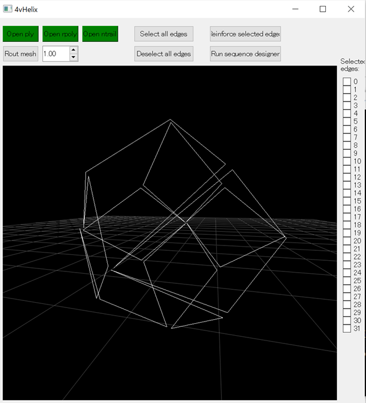
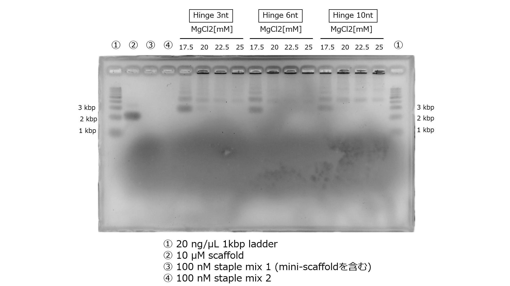
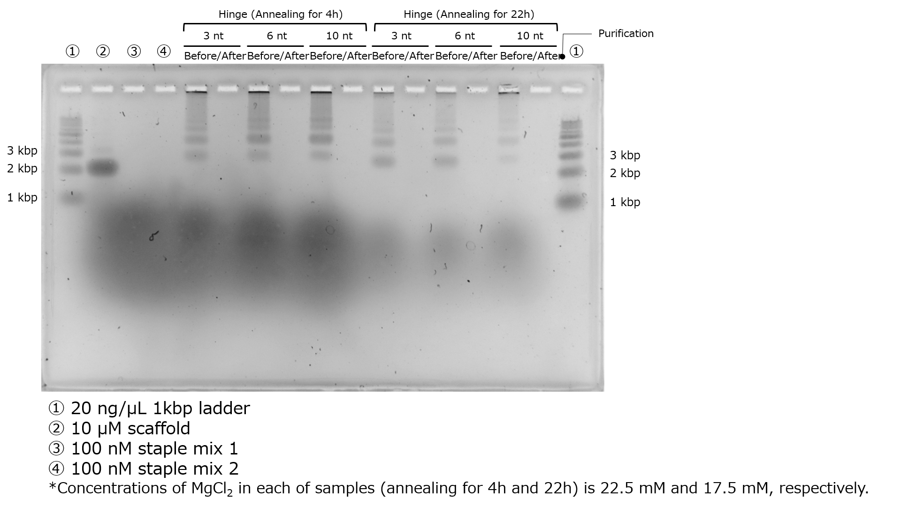
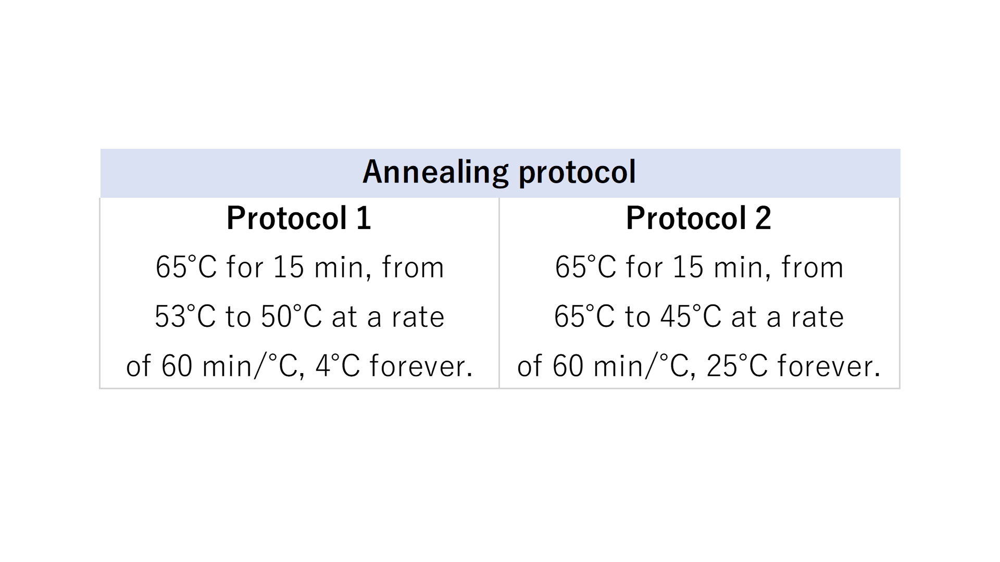
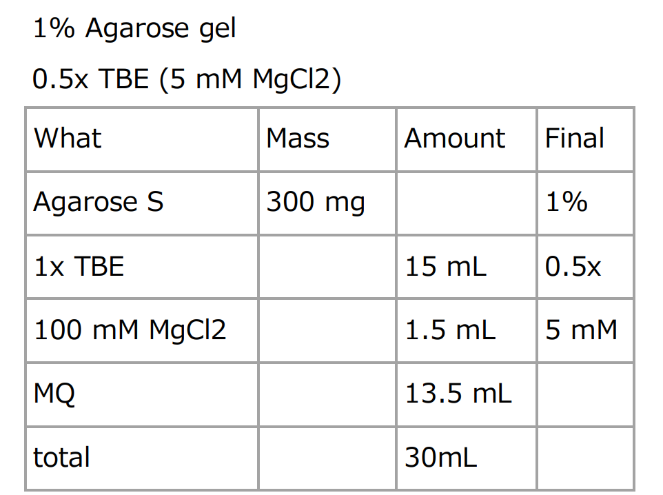
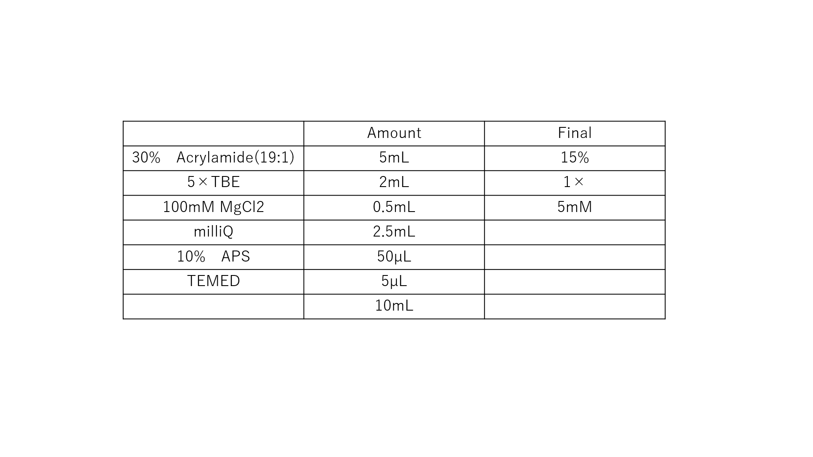

Appendix
routing
I conducted routing of the scaffold strand in the wireframe structure under the following conditions:・The scaffold strand passes through every edge.
・The scaffold strand passes through each edge only once.
・Ensure that the DNA strands connecting the edges of the mesh do not cross.
・In cases where the above conditions cannot be met, if necessary, the scaffold strand passes through one edge twice. A double-pass edge is referred to as a 'double edge.'
For routing, I utilized software employed in previous research [1].
https://github.com/mohamma1/bscor 
Fig.1 The path of scaffold strands in the rhombic dodecahedron wireframe structure guided by routing
This figure was generated using the 4vHelix software, as mentioned later, rather than the previously mentioned bscor software. The white lines indicate the path of the scaffold strands.
Strengthening the Edges
The edges of the wireframe structure, which is formed by adding staple strands to the routed structure, are composed of one or two DNA double helices. In this state, it is conceivable that the edges may deform during structural transformations, preventing the desired deformation as per the design. Therefore, to make the wireframe structure more robust and able to withstand deformations, each edge was transformed into a 4 Helix Bundle. The edge reinforcement was carried out through the following steps:Step 1. Adding a loop of the scaffold strand to all edges (adding the second and third helices).
Step 2. Adding short scaffold strands (miniscaffold) to the edges other than double edges (adding the fourth helix). Miniscaffold is not required for double edges, as they already have two passes of the scaffold strand. Edge reinforcement was accomplished using the software developed by the authors of Reference 2.
https://github.com/marlol4/4vHelix
Closing corners using strand displacement
To close the corners, the fastening-DNA extending from the edges must grow towards the neighboring edges. We verified the phase of DNA double helices on caDNAno and designed the fastening-DNA to extend from the appropriate positions. Multiple strands of fastening-DNA extend from a single edge. The sequence of fastening-DNA was determined to ensure that binding does not occur among the fastening-DNA extending from the same edge.The number of base pairs required for the mobility of edges
The required length 'l' of the hinge necessary to close the corners of the structure was determined using the following equation.Assuming a distance 'Δh' of 3 nm between the double helices and aiming to close the angle 'θ' up to 30°, we find that 'l' equals 2.8977... nm. The hinge is designed as single-stranded DNA (ssDNA). Considering a length of 0.7 nm per ssDNA nucleotide, the minimum number of nucleotides needed for the hinge is 5.
The designed file
The ultimate design fileVertexSwitcher_structure.json download
VertexSwithcer_sequence.xlsx download
Simulation using oxDNA
The confirmation of structural stability was performed using oxDNA, a software for coarse-grained molecular dynamics simulations. The simulation consists of four main steps. First, a Rigid-body simulation is used to roughly shape the structures designed in caDNAno. Subsequently, short-time calculations known as MC relaxation and MD relaxation are carried out to alleviate any structural strains. Finally, the MD simulation is employed to calculate the temporal evolution of the structure.
Fig.2 MD Simulation of the 10nt Hinge Intermediate
Intermediate MD Simulation Input FileStability Assessment by RMSF
We calculated the RMSF (Root Mean Square of Fluctuation) values based on the data obtained from oxDNA simulations to assess stability. RMSF quantifies the fluctuations of particles derived from MD simulations, representing the deviation (standard deviation) of each particle from its average position. We developed a Python program that converts RMSF values into a color map, allowing for visual assessment based on the magnitude of RMSF.python file download
Electrophoresis Results of Structures Generated by Annealing Protocol 2
We present the agarose gel electrophoresis results of structures generated by Annealing Protocol 2 in Figure 3. Fig.3 The Electrophoresis Results of Structures Generated by Annealing Protocol 2
The band with a MgCl2 concentration of 17.5mM is prominently visible. Annealing Protocol 2 is a universally applicable annealing protocol for 3D DNA origami, and, in practice, we proceeded with experiments using Annealing Protocol 1, which is likely to be more optimized.The Agarose Gel Electrophoresis Results After Purification by Ultrafiltration
Illustrated in Figure 4 is the agarose gel electrophoresis result following purification by ultrafiltration. Fig.4 The Electrophoresis Results After Purification by Ultrafiltration
It is evident that not only the intended structures but also some of the staples responsible for forming the target structure have been removed. This could be attributed to the high salt concentration, which is believed to have resulted in a low yield through ultrafiltration. In the subsequent experiment, purification was carried out using gel extraction.Fig.5 The Composition of the Solution Preparation
Fig.6 Annealing Control
Fig.7 The Composition of Agarose Gel
Fig.8 The Composition of Polyacrylamide Gel